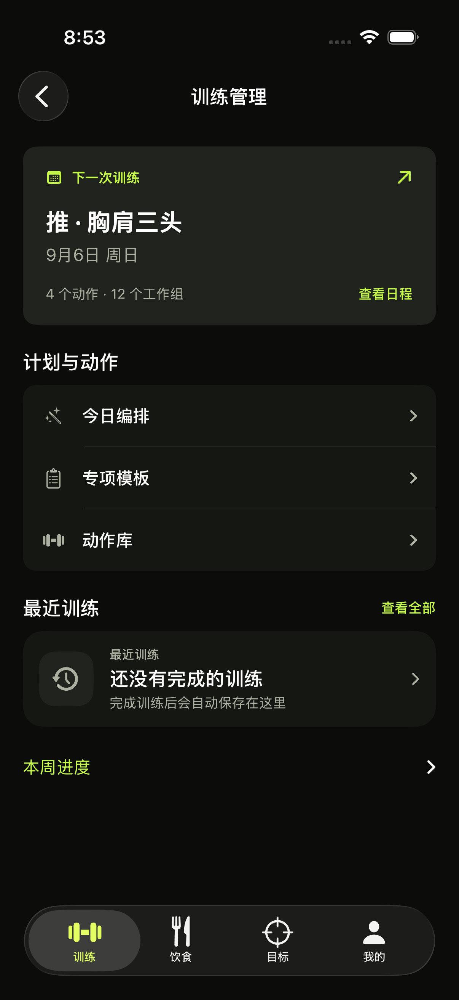
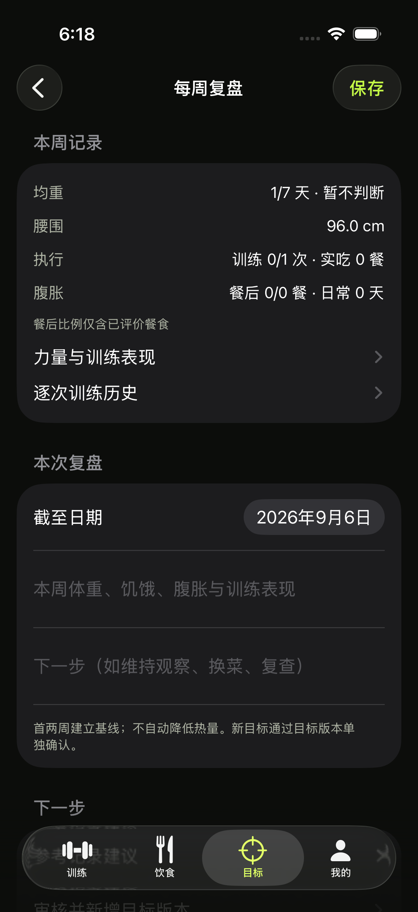
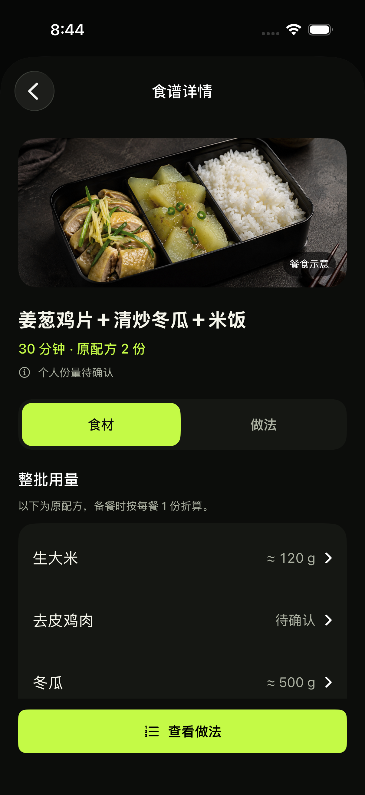
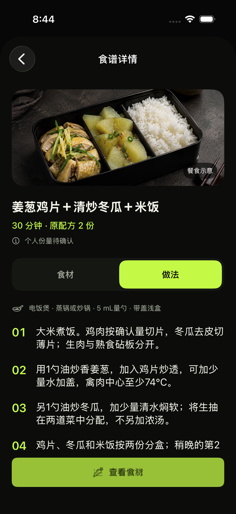
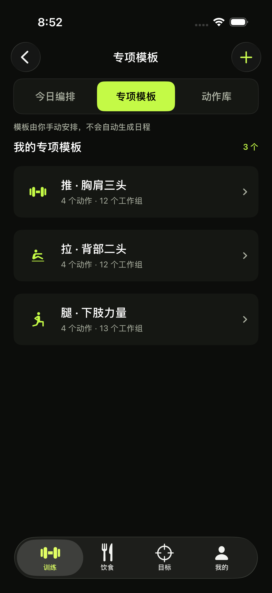
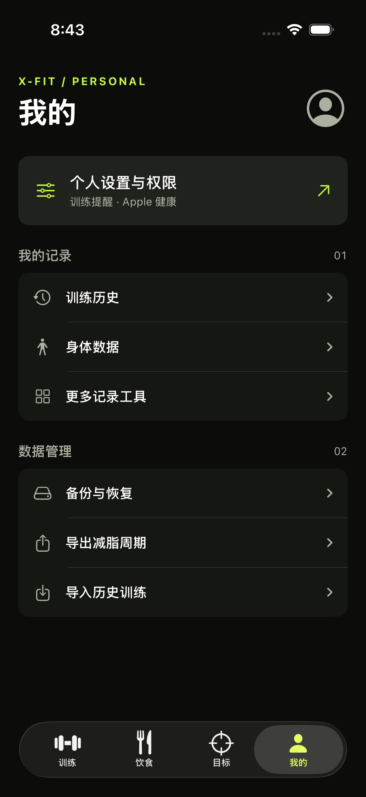
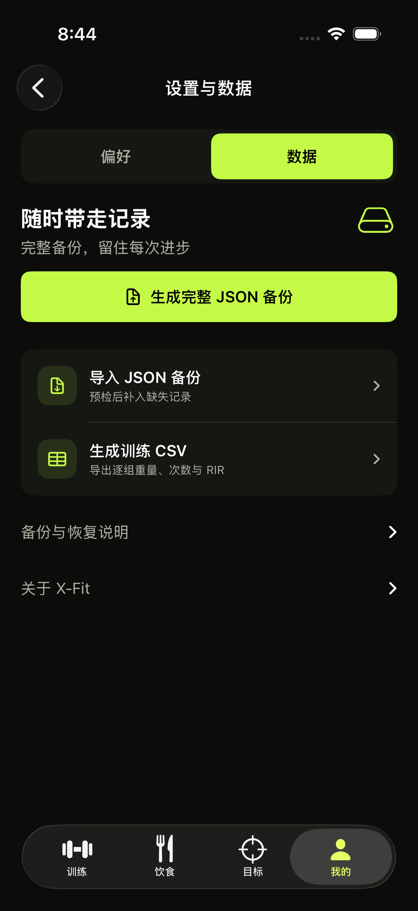

训练管理
下一次训练前置，日常编排、模板和动作库集中在一组入口。

训练历史
按日期扫描训练名称、工作组与时长，完整记录点击查看。
每周复盘
均重与记录覆盖率优先，训练、实吃和身体反馈随后；数据不足如实显示。

查看修改前

食谱详情
食材与做法分开看，明确原配方份数、整批用量与个人待确认状态。

展开做法页

专项模板
名称、动作数和工作组形成简洁摘要，点开继续使用原编辑器。

我的
个人设置、训练记录和数据管理分组，备份入口直达数据页。

展开备份与恢复
